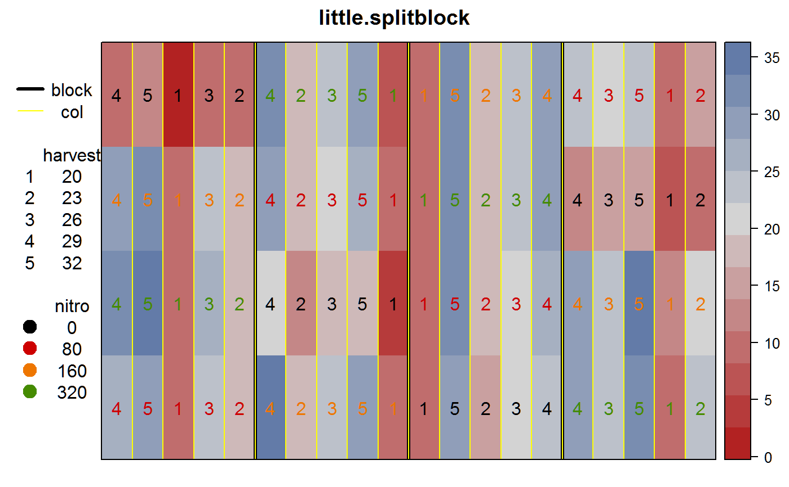

little.splitblock.RdSplit-block experiment of sugar beets.
data("little.splitblock")
A data frame with 80 observations on the following 6 variables.
rowrow
colcolumn
yieldsugar beet yield, tons/acre
harvestharvest date, weeks after planting
nitronitrogen, pounds/acre
blockblock
Four rates of nitrogen, laid out as a 4x4 Latin-square experiment.
Within each column block, the sub-plots are strips (across 4 rows) of 5 different harvest dates.
The use of sub-plots a s strips necessitates care when determining the error terms in the ANOVA table.
Note, Little has yield value of 22.3 for row 3, column I-H3. This data uses 23.3 in order to match the marginal totals given by Little.
Thomas M. Little, F. Jackson Hills. (1978) Agricultural Experimentation
None.
library(agridat) data(little.splitblock) dat <- little.splitblock # Match marginal totals given by Little. ## sum(dat$yield) ## with(dat, tapply(yield,col,sum)) ## with(dat, tapply(yield,row,sum)) # Layout shown by Little figure 10.2 libs(desplot) desplot(yield ~ col*row, data=dat, out1=block, out2=col, col=nitro, cex=1, num=harvest, main="little.splitblock")# Convert continuous traits to factors dat <- transform(dat, R=factor(row), C=factor(block), H=factor(harvest), N=factor(nitro)) if(0){ libs(lattice) xyplot(yield ~ nitro|H,dat) xyplot(yield ~ harvest|N,dat) } # Anova table matches Little, table 10.3 m1 <- aov(yield ~ R + C + N + H + N:H + Error(R:C:N + C:H + C:N:H), data=dat)#> Warning: Error() model is singularsummary(m1)#> #> Error: C:H #> Df Sum Sq Mean Sq F value Pr(>F) #> C 3 58 19.4 2.326 0.126 #> H 4 3719 929.6 111.711 2.19e-09 *** #> Residuals 12 100 8.3 #> --- #> Signif. codes: 0 '***' 0.001 '**' 0.01 '*' 0.05 '.' 0.1 ' ' 1 #> #> Error: R:C:N #> Df Sum Sq Mean Sq F value Pr(>F) #> R 3 224.7 74.9 3.755 0.07888 . #> N 3 1101.3 367.1 18.406 0.00198 ** #> Residuals 6 119.7 19.9 #> --- #> Signif. codes: 0 '***' 0.001 '**' 0.01 '*' 0.05 '.' 0.1 ' ' 1 #> #> Error: C:N:H #> Df Sum Sq Mean Sq F value Pr(>F) #> N:H 12 157.68 13.140 6.497 5.61e-06 *** #> Residuals 36 72.81 2.022 #> --- #> Signif. codes: 0 '***' 0.001 '**' 0.01 '*' 0.05 '.' 0.1 ' ' 1